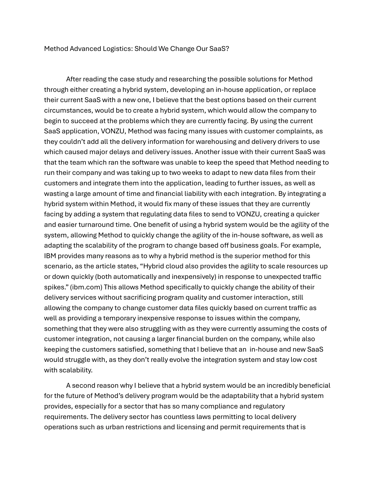
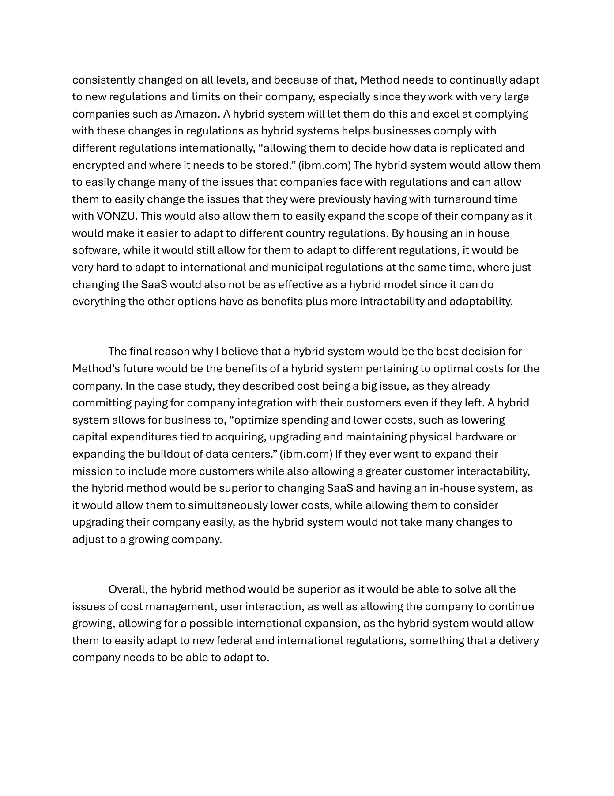
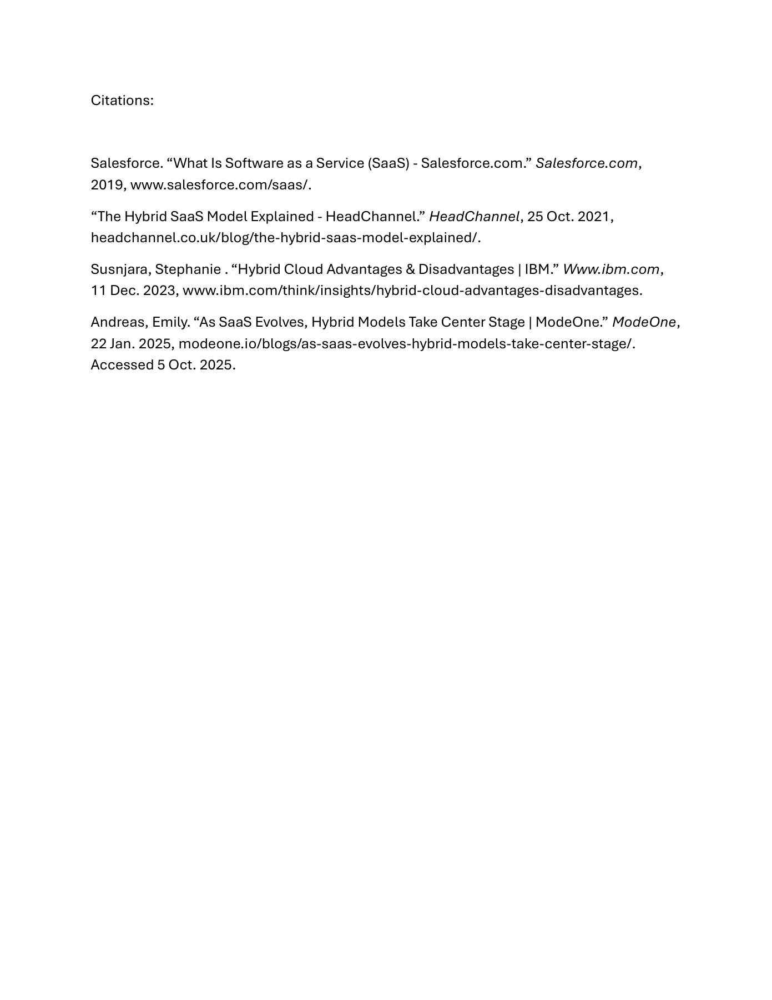

Logan Guild / Case studies
Method Advanced Logistics: Should We Change Our SaaS?
3 pages. Read below without downloading. Select a page image to enlarge it.

Page 1 text
Method Advanced Logistics: Should We Change Our SaaS?
After reading the case study and researching the possible solutions for Method
through either creating a hybrid system, developing an in-house application, or replace
their current SaaS with a new one, I believe that the best options based on their current
circumstances, would be to create a hybrid system, which would allow the company to
begin to succeed at the problems which they are currently facing. By using the current
SaaS application, VONZU, Method was facing many issues with customer complaints, as
they couldn’t add all the delivery information for warehousing and delivery drivers to use
which caused major delays and delivery issues. Another issue with their current SaaS was
that the team which ran the software was unable to keep the speed that Method needing to
run their company and was taking up to two weeks to adapt to new data files from their
customers and integrate them into the application, leading to further issues, as well as
wasting a large amount of time and financial liability with each integration. By integrating a
hybrid system within Method, it would fix many of these issues that they are currently
facing by adding a system that regulating data files to send to VONZU, creating a quicker
and easier turnaround time. One benefit of using a hybrid system would be the agility of the
system, allowing Method to quickly change the agility of the in-house software, as well as
adapting the scalability of the program to change based o business goals. For example,
IBM provides many reasons as to why a hybrid method is the superior method for this
scenario, as the article states, “Hybrid cloud also provides the agility to scale resources up
or down quickly (both automatically and inexpensively) in response to unexpected tra ic
spikes.” (ibm.com) This allows Method specifically to quickly change the ability of their
delivery services without sacrificing program quality and customer interaction, still
allowing the company to change customer data files quickly based on current tra ic as
well as providing a temporary inexpensive response to issues within the company,
something that they were also struggling with as they were currently assuming the costs of
customer integration, not causing a larger financial burden on the company, while also
keeping the customers satisfied, something that I believe that an in-house and new SaaS
would struggle with, as they don’t really evolve the integration system and stay low cost
with scalability.
A second reason why I believe that a hybrid system would be an incredibly beneficial
for the future of Method’s delivery program would be the adaptability that a hybrid system
provides, especially for a sector that has so many compliance and regulatory
requirements. The delivery sector has countless laws permitting to local delivery
operations such as urban restrictions and licensing and permit requirements that is
Page 2 text
consistently changed on all levels, and because of that, Method needs to continually adapt
to new regulations and limits on their company, especially since they work with very large
companies such as Amazon. A hybrid system will let them do this and excel at complying
with these changes in regulations as hybrid systems helps businesses comply with
di erent regulations internationally, “allowing them to decide how data is replicated and
encrypted and where it needs to be stored.” (ibm.com) The hybrid system would allow them
to easily change many of the issues that companies face with regulations and can allow
them to easily change the issues that they were previously having with turnaround time
with VONZU. This would also allow them to easily expand the scope of their company as it
would make it easier to adapt to di erent country regulations. By housing an in house
software, while it would still allow for them to adapt to di erent regulations, it would be
very hard to adapt to international and municipal regulations at the same time, where just
changing the SaaS would also not be as e ective as a hybrid model since it can do
everything the other options have as benefits plus more intractability and adaptability.
The final reason why I believe that a hybrid system would be the best decision for
Method’s future would be the benefits of a hybrid system pertaining to optimal costs for the
company. In the case study, they described cost being a big issue, as they already
committing paying for company integration with their customers even if they left. A hybrid
system allows for business to, “optimize spending and lower costs, such as lowering
capital expenditures tied to acquiring, upgrading and maintaining physical hardware or
expanding the buildout of data centers.” (ibm.com) If they ever want to expand their
mission to include more customers while also allowing a greater customer interactability,
the hybrid method would be superior to changing SaaS and having an in-house system, as
it would allow them to simultaneously lower costs, while allowing them to consider
upgrading their company easily, as the hybrid system would not take many changes to
adjust to a growing company.
Overall, the hybrid method would be superior as it would be able to solve all the
issues of cost management, user interaction, as well as allowing the company to continue
growing, allowing for a possible international expansion, as the hybrid system would allow
them to easily adapt to new federal and international regulations, something that a delivery
company needs to be able to adapt to.
Page 3 text
Citations: Salesforce. “What Is Software as a Service (SaaS) - Salesforce.com.” Salesforce.com, 2019, www.salesforce.com/saas/. “The Hybrid SaaS Model Explained - HeadChannel.” HeadChannel, 25 Oct. 2021, headchannel.co.uk/blog/the-hybrid-saas-model-explained/. Susnjara, Stephanie . “Hybrid Cloud Advantages & Disadvantages | IBM.” Www.ibm.com, 11 Dec. 2023, www.ibm.com/think/insights/hybrid-cloud-advantages-disadvantages. Andreas, Emily. “As SaaS Evolves, Hybrid Models Take Center Stage | ModeOne.” ModeOne, 22 Jan. 2025, modeone.io/blogs/as-saas-evolves-hybrid-models-take-center-stage/. Accessed 5 Oct. 2025.